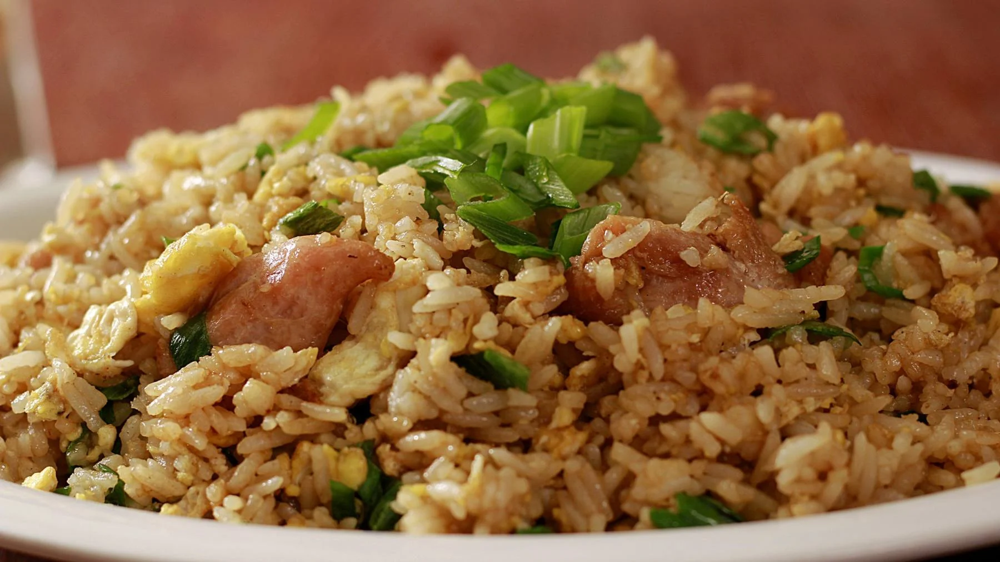

El secreto del chaufa perfecto

Chef Jair Albornoz

El arroz chaufa es uno de los platos más representativos del chifa peruano, una fusión de sabores chinos y peruanos que conquista paladares.
Preparado al wok con fuego intenso, combina arroz, huevo, cebolla china, pollo, carne o mariscos, logrando un sabor único e inconfundible.
Su historia se remonta a la llegada de los inmigrantes chinos al Perú, quienes mezclaron sus tradiciones culinarias con ingredientes locales,
dando vida a este delicioso plato que hoy en día es símbolo de unión cultural y sabor casero.